47 photographies · aucune image de synthèse
Le domaine, sans filtre
Tout ce que vous voyez ici a été photographié sur place. Pas de banque d'images, pas d'illustration générée — le lieu tel qu'il est.
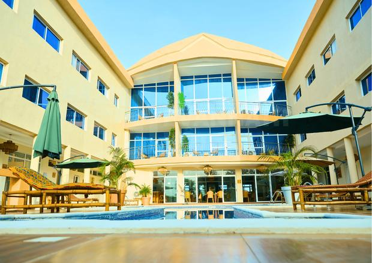
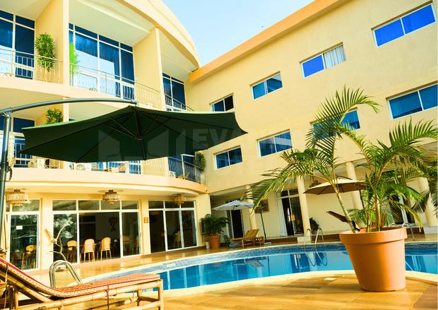
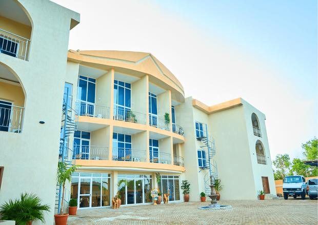

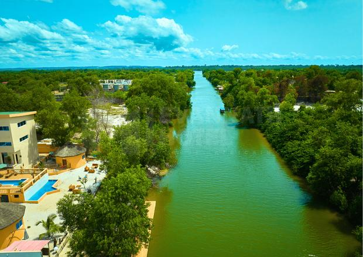
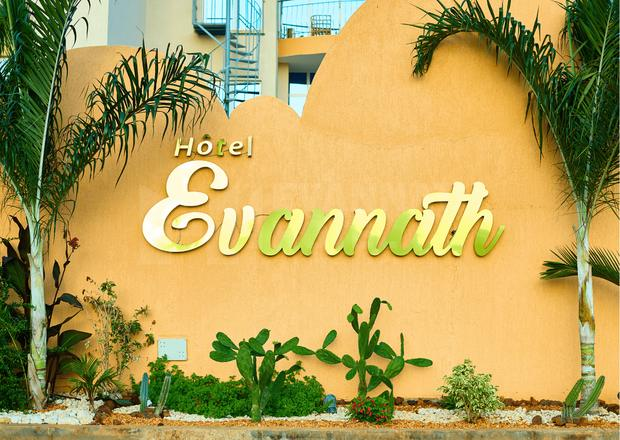
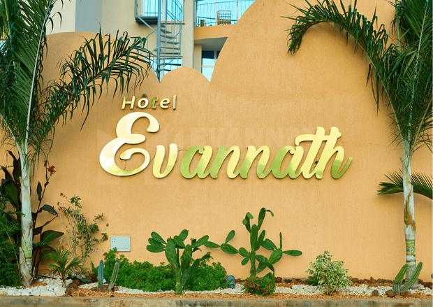
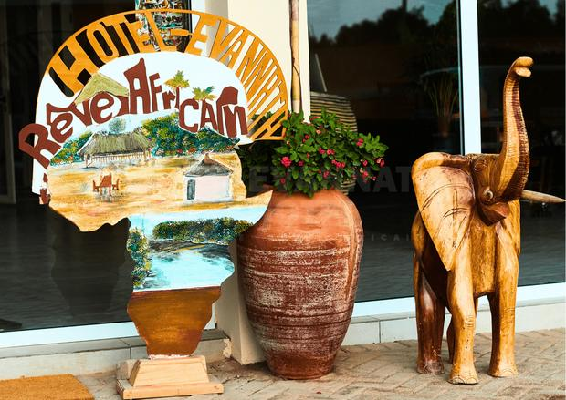
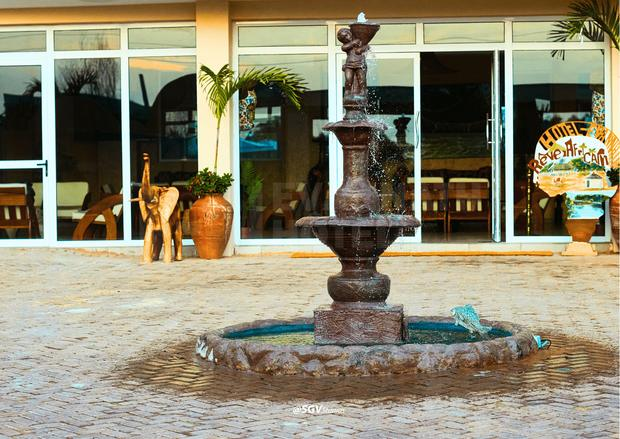
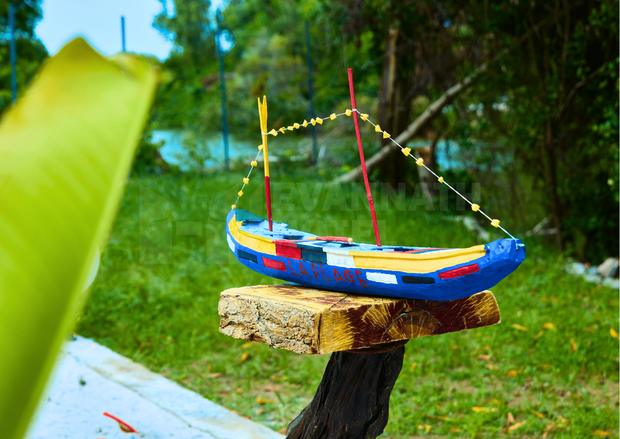
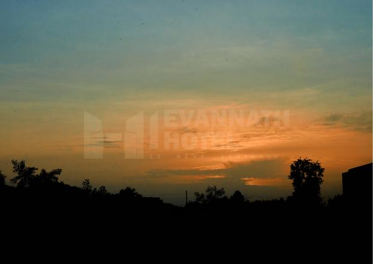
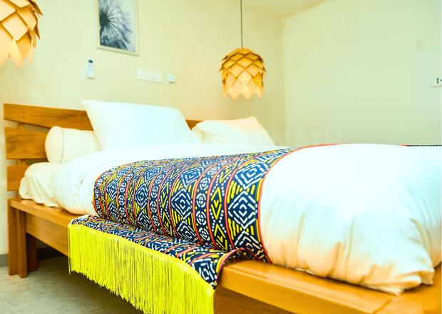

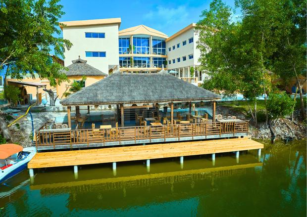
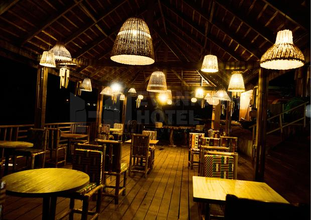
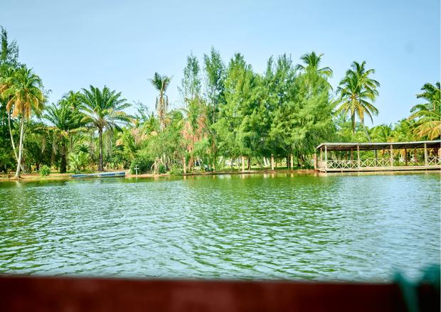
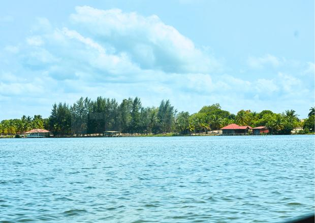
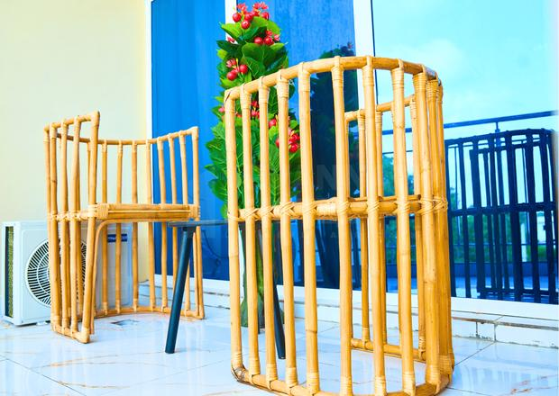
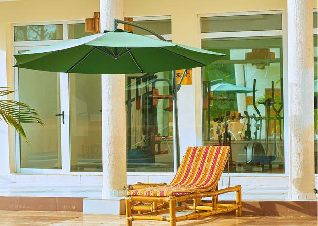

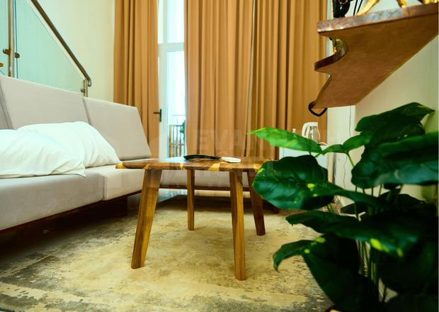
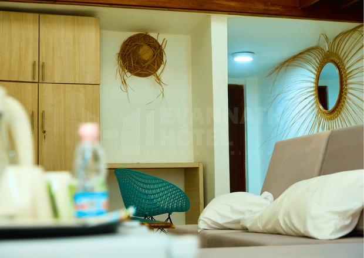
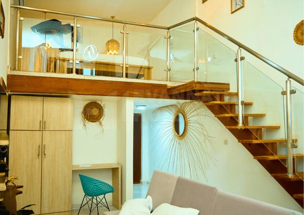
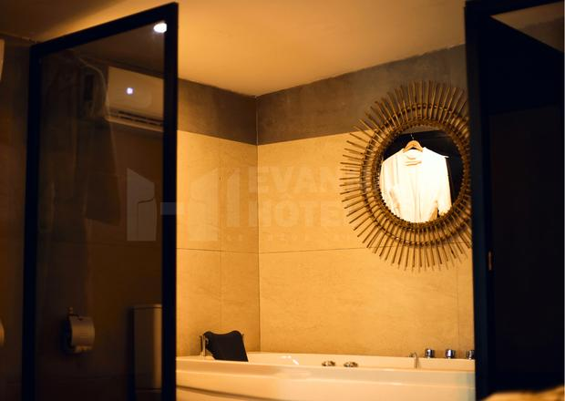
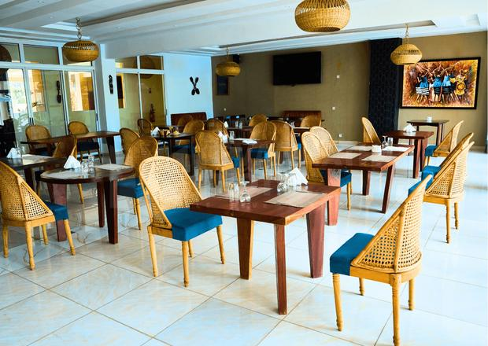
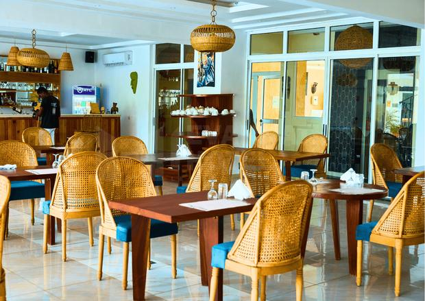

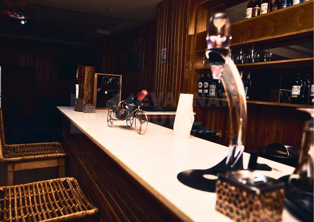

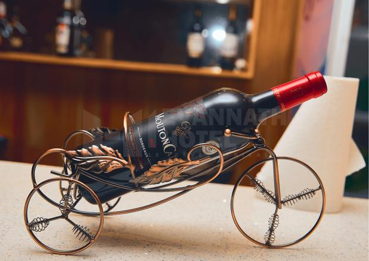


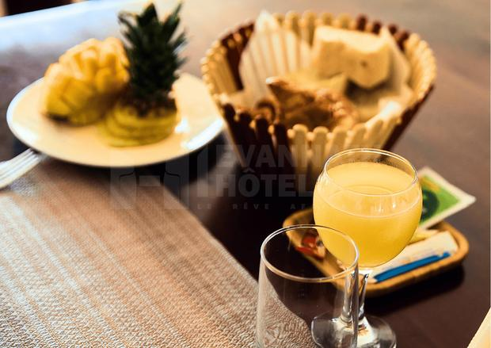
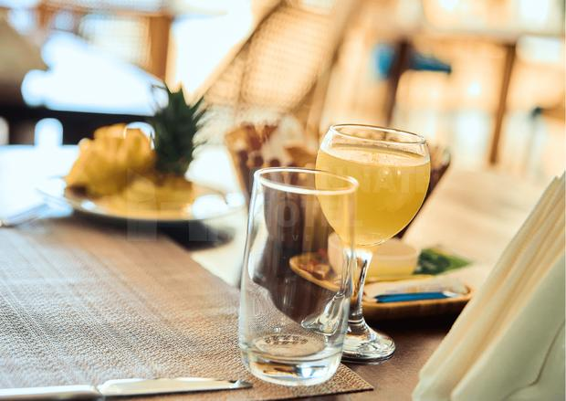
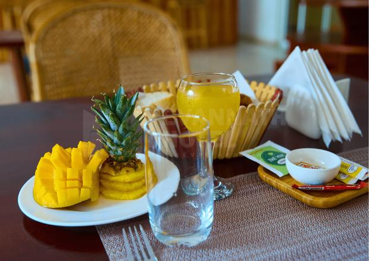
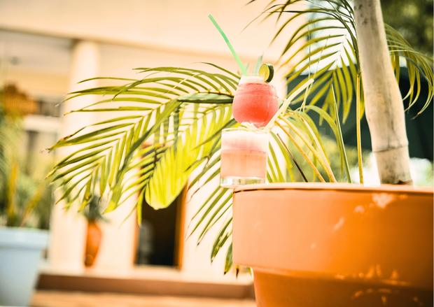

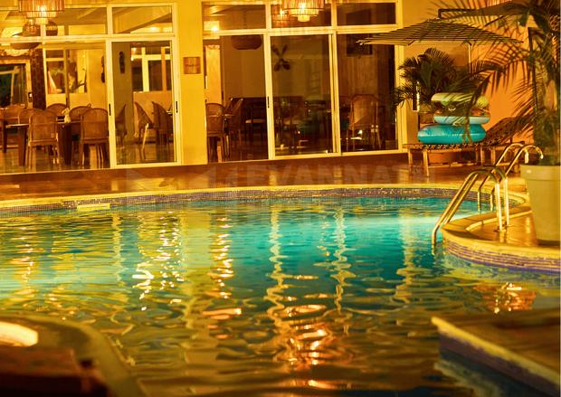


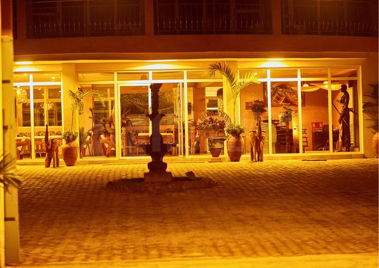
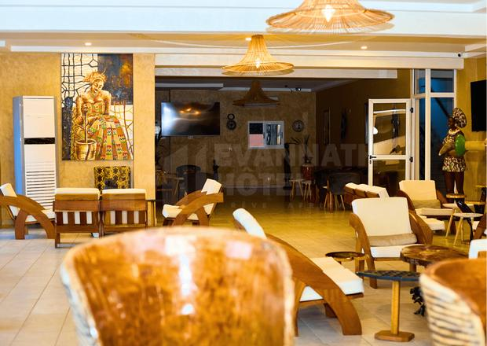
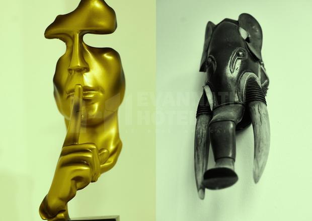
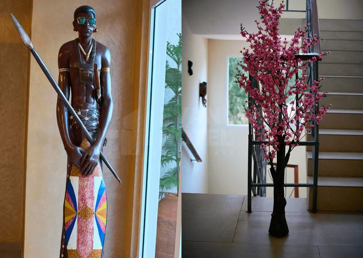
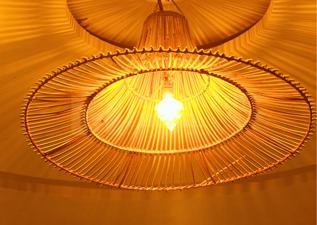
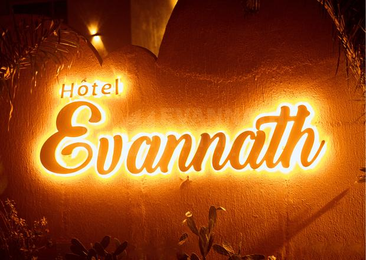
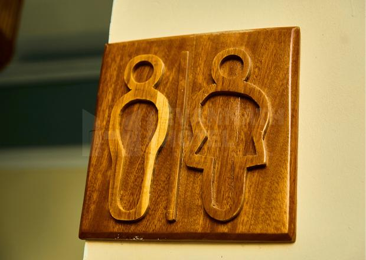
Aucune photo dans cette catégorie.